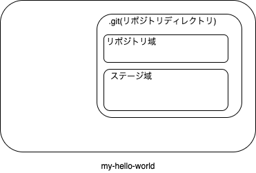

新規にリポジトリを作る¶
適当なディレクトリを用意して、ローカルのリポジトリを作ってみましょう。
my-hello-worldディレクトリを作り、その中で端末を開きますgit init コマンドでリポジトリを生成します
リポジトリの作成(ローカル)¶
# プロンプトはUNIX向けですが、PowerShellでも同じ操作ができます
$ mkdir my-hello-world
$ cd my-hello-world
$ git init
Initialized empty Git repository in /private/tmp/my-hello-world/.git/
このとき、initしたディレクトリにおいて、 .git というディレクトリが作られます(UNIX環境であればドットファイルのため通常は見えない)。
このディレクトリの中は大きく2つの領域として使われ、全体として リポジトリ と呼ばれます。

init直後の状態¶
.git 自体をリポジトリと一般的に呼びますが…
- リポジトリ域(狭義での「リポジトリ」)
コミットと呼ばれる変更不可のデータを納める領域、ローカルでコミットしているものもありますし、リモートから入ってくるものもあります。 各コミットは親コミットとのリンクを持ちます、
- ステージ(キャッシュ)
コミットされる前の状態(ファイル群)が納められる領域、コミット後もコピーを(論理的に)持って差分抽出の補助も行います。
そしてディレクトリそのものは ワークツリー と呼びます。
次は、ファイルを配置してリポジトリに登録してみましょう。
vscodeにおけるinit¶
Visual Studio Code(vscode)上でのgitの利用については2通り考えられます。
git で作ったディレクトリ(リポジトリ・ワークツリーを開く
vscode自身で作る